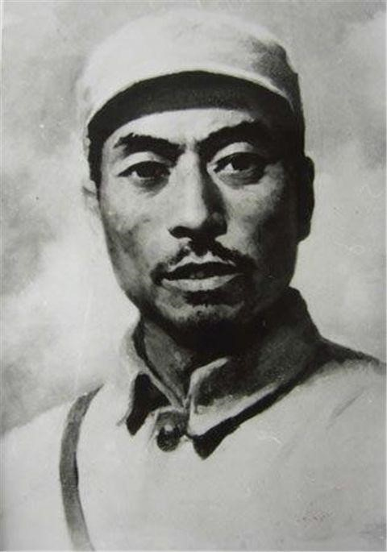

杨靖宇
杨靖宇（1905—1940），原名马尚德，著名的抗日民族英雄，中国共产党优秀的军事将领。他长期在吉林白山黑水之间领导抗日武装，曾任东北抗日联军第一路军总司令，是中国抗日战争的重要民族英雄。
在极端艰苦的环境下，杨靖宇率领部队坚持游击战争，与日本侵略者展开殊死斗争。即使在粮绝弹尽之时，他仍誓死不屈，最终壮烈牺牲，年仅35岁。敌人解剖时发现，他的胃里只有草根、树皮和棉絮，却没有一粒粮食，这一事迹震撼了中外。
在家风方面，杨靖宇严以律己、清廉简朴，对家庭成员要求严格。他教育后代要忠诚祖国、无私奉献，秉持诚信、勇毅、勤俭的品质，把个人命运与民族存亡紧密相连。他的家风体现了共产党人坚定的革命理想与牺牲精神。
杨靖宇的英雄事迹和红色家风，已成为吉林乃至全国人民缅怀和学习的重要精神财富。他的名字永远镌刻在抗日战争的丰碑上，激励着一代又一代人。
← 返回中国地图